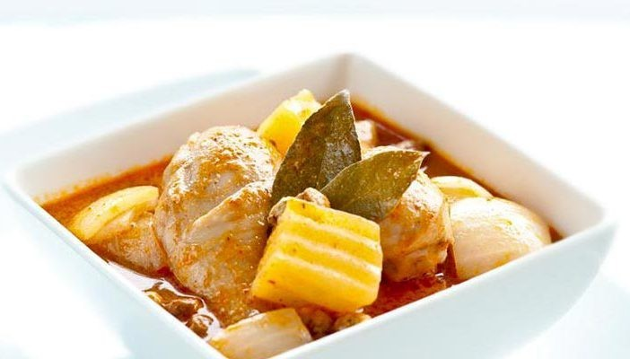
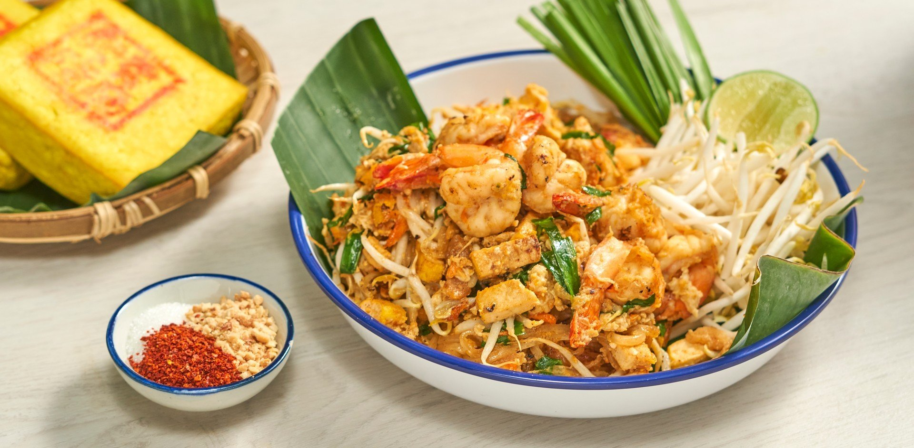

TOP 3 Foods

ต้มยำกุ้ง
ต้มยำกุ้ง เป็นอาหารไทยภาคกลางประเภทต้มยำ ซึ่งเป็นที่นิยมรับประทานไปทุกภาคในประเทศไทย เป็นอาหารที่รับประทานกับข้าวและ มีรสเปรี้ยวและเผ็ดเป็นหลักผสมเค็มและหวานเล็กน้อย

มัสมั่นไก่
แกงมัสมั่น เป็นอาหารประเภทแกงที่ได้รับอิทธิพลมาจากอาหารมลายู ชาวไทยมุสลิมเรียกแกงชนิดนี้ว่า ซาละหมั่น แกงมัสมั่นแบบมุสลิมไทยออกรสหวานในขณะที่ตำรับดั้งเดิมของชาวมุสลิมออกรสเค็มมัน

ผัดไทย
ผัดไทย เป็นอาหารไทยที่หารับประทานได้ทั่วประเทศไทย โดยเฉพาะในภาคกลาง และอาจพบได้ในร้านอาหารไทยในต่างประเทศบางแห่ง